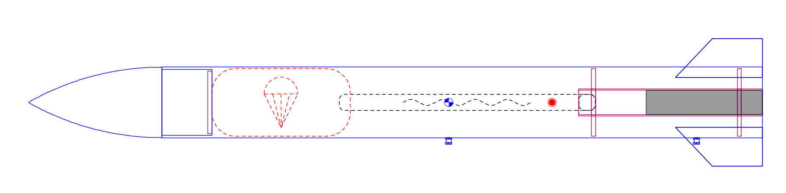

L1 Certification Rocket
Independently designed and scratch built rocket to achieve Level 1 (L1) High-Power Rocketry certification.

1. Objective and Requirements
The main objective of the project was to obtain a certification to fly high-power rockets. Besides being a personal passion of mine, this certification would assist in test launching any experimental work I decide to do in the future, since it is a clear metric of my ability to design safe rockets
- Targeted stability Achieve 1.5 cal stability to ensure a smooth flight
- Safe recovery Ensure a safe return of the rocket in fully flyable condition
2. Mechanical Design and CFD Workflow
The airbrake assembly was modeled in Autodesk Inventor to deploy symmetrically into the freestream perpendicular to the rocket body. To quantify the effectiveness of the airbrakes, I designed and established a team-standard Ansys Fluent CFD workflow spanning Mach 0.1–0.8 across four deployment angles.
The resulting drag coefficient (CD) lookup tables will feed directly into our prediction and control algorithm


3. Control Design and Validation
Using Simulink and C++, we developed a real-time PID control loop running on an ESP32 microcontroller. The controller fuses live IMU and barometer telemetry to estimate projected apogee and command airbrake deployment angles throughout the coast phase.
Subscale prototype launches are used to validate sensor filtering, mechanical reliability, and real-world drag performance against CFD predictions.